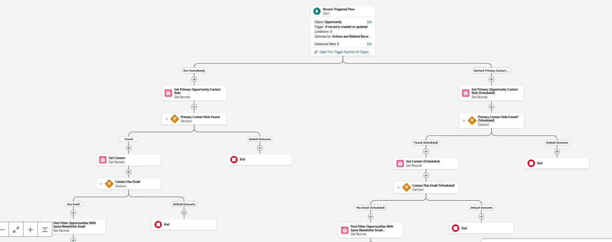

Eliminated marketing automation enrollment failures caused by missing demo attendee email on Opportunity records by automating field population through a record-triggered Salesforce Flow.
Record-triggered Salesforce automation ensuring demo attendee email addresses are consistently captured at the Opportunity level for reliable marketing automation enrollment and reporting.
The demo scheduling process relied on attendee email information that initially lived on Lead records. After conversion, this data was not consistently present on the Opportunity object, which was the required source field used by the marketing automation system for post-demo enrollment workflows.
This project implemented automation to guarantee that the required email field was consistently populated whenever a demo event was created.
